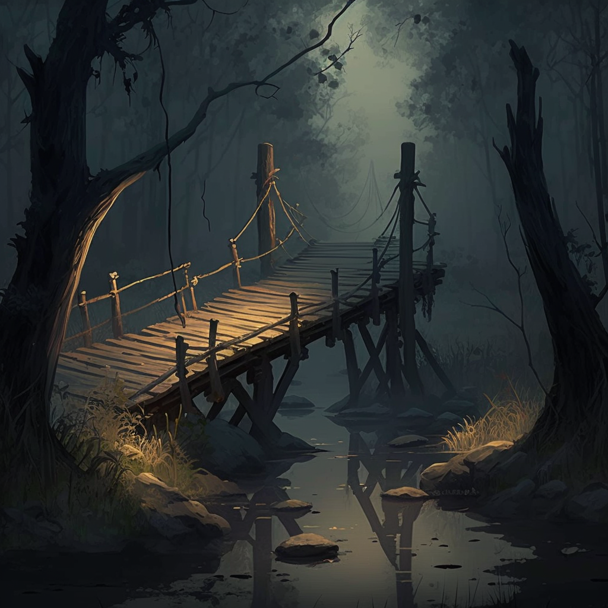

Part 1: The Curious Encounter
It was a bright, sunny day in the magical world where anything could happen. The curious little cat was exploring the fields, chasing butterflies and climbing trees, when it stumbled upon a strange metal object. As the cat cautiously approached it, the object suddenly sprang to life, revealing itself to be a friendly robot.
Part 2: The Adventure
The cat and the robot quickly became friends, and they decided to go on an adventure together. They explored the lush forest, climbing up tall trees and crossing over babbling brooks. As they journeyed deeper into the forest, they encountered a group of playful squirrels, who led them to a hidden grove filled with sparkling fireflies.
The cat and the robot were mesmerized by the fireflies' glowing dance, and they joined in, twirling and leaping through the air. The squirrels played music on makeshift instruments, and soon the whole grove was filled with music and laughter. After the dance, the cat and the robot settled down by a cozy campfire, where they shared stories and roasted marshmallows.
Part 3: The Challenge
As they journeyed deeper into the forest, the cat and the robot encountered a dark and treacherous swamp. The swamp was filled with dangerous creatures, and the only way to cross it was on a rickety old bridge. The bridge was old and worn, and it creaked and groaned as the cat and the robot made their way across it.
Halfway across the bridge, they heard a loud crack, and the bridge began to give way beneath their feet. The cat and the robot quickly sprang into action, grabbing hold of each other and using their combined strength to leap to safety on the other side of the swamp.
Part 4: The Resolution
After their harrowing adventure in the swamp, the cat and the robot emerged triumphant and unscathed. They continued on their journey, encountering all manner of creatures and obstacles along the way. Each challenge they faced only served to strengthen their friendship and deepen their bond. And in the end, they emerged victorious, having completed their adventure and formed a friendship that would last a lifetime.